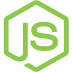
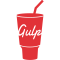

To get started with Dasher Theme, the only requirement is a Node Js, Gulp, SASS & Bootstrap environment.
Below are the tools which we use to building a Dasher theme. For more detail of the toolset, go to their official website.

Node.js is an open-source, cross-platform, back-end JavaScript runtime environment that runs on the V8 engine and executes JavaScript code outside a web browser.

A toolkit to automate & enhance your workflow. Gulp is an open-source JavaScript toolkit used as a streaming build system in front-end web development.
Sass (short for syntactically awesome style sheets) is a preprocessor scripting language that is interpreted or compiled into Cascading Style Sheets (CSS).
Bootstrap is a free and open-source CSS framework directed at responsive, mobile-first front-end web development. Dasher is built on 5 and heavily depends on it.